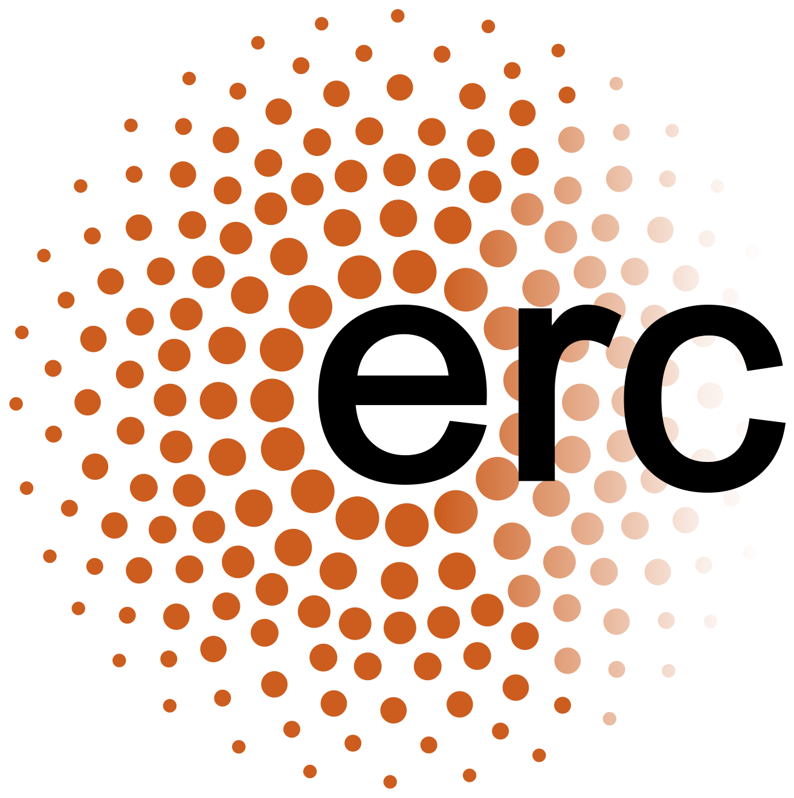
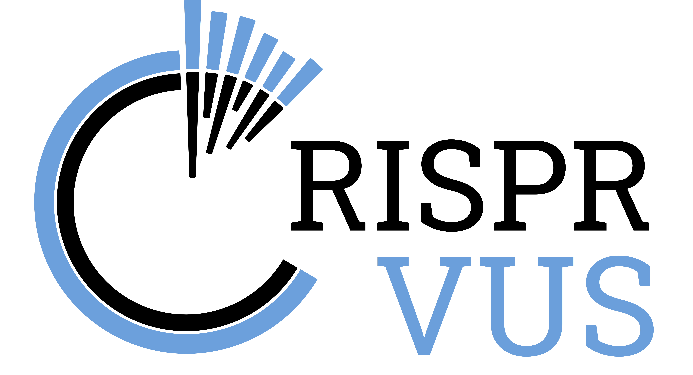
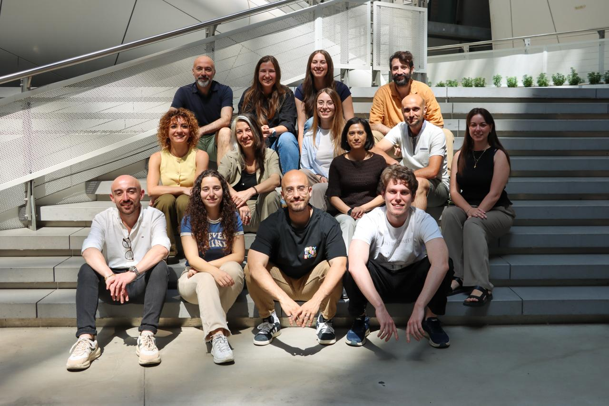

Interrogate biological systems
We use CRISPR and pharmacological perturbations to reveal genes, pathways and interactions that determine cancer-cell fitness and drug response.
We combine functional genomics, multi-omics and machine learning to understand how cancer cells respond to genetic and pharmacological perturbations, and to predict vulnerabilities that can be exploited therapeutically.
We use systematic experimental perturbations to learn the rules governing cancer-cell behaviour.
We use CRISPR and pharmacological perturbations to reveal genes, pathways and interactions that determine cancer-cell fitness and drug response.
We integrate molecular profiles across time, scale and context to distinguish specific dependency responses from shared cellular programmes.
We develop statistical and machine-learning methods that generalise from existing screens to predict vulnerabilities in unseen contexts.
A common question connects our projects: can we move from cataloguing cancer vulnerabilities to understanding and predicting them?
Longitudinal perturbational profiling and unsupervised machine learning to characterise cancer dependency shock (DepSHOCK), uncover the pathways sustaining genetic dependencies, and build models that predict dependency from DepSHOCK response signatures.

Large-scale functional maps that connect variants of uncertain significance to cancer dependencies, molecular context and therapeutic hypotheses.

Uncertainty-aware models integrating genome-wide single-gene screens with targeted combinatorial perturbations.
Mapping how cancer cells acquire, maintain and reverse drug-resistant states to expose new therapeutic opportunities.
Every perturbation teaches us. Every model helps us choose the next experiment to perform.
IorioLab · Computational Biology Research Centre · Human Technopole
We are committed to open and reproducible science, sharing our methods, data and computable scientific manuscripts so others can reproduce, scrutinise and build on our work. Explore our dashboard of software tools and computable scientific manuscripts.
Correction of gene-independent responses in CRISPR-Cas9 screens.
Identification of context-specific cancer dependencies from functional-genomic screens.
Functional interpretation of cancer genetic variation at scale.
Collaborative efforts toward predictive functional genomics and cancer dependency mapping.

We bring computational scientists, molecular biologists and genome engineers together around the same biological questions. Computation shapes the experiments; experiments reshape the models.
Publications, projects, events and opportunities.
Project update and associated resources.
Collaborative programme connecting perturbational data and predictive modelling.
See current opportunities and information for prospective lab members.